Chapter 7 Conclusion
## year period periodName value seriesID item_name date
## 1 2021 M10 October 155.317 SUUR0000SA0 All items Oct 2021
## 2 2021 M09 September 154.076 SUUR0000SA0 All items Sep 2021
## 3 2021 M08 August 153.643 SUUR0000SA0 All items Aug 2021
## 4 2021 M07 July 153.352 SUUR0000SA0 All items Jul 2021
## 5 2021 M06 June 152.649 SUUR0000SA0 All items Jun 2021
## 6 2021 M05 May 151.334 SUUR0000SA0 All items May 2021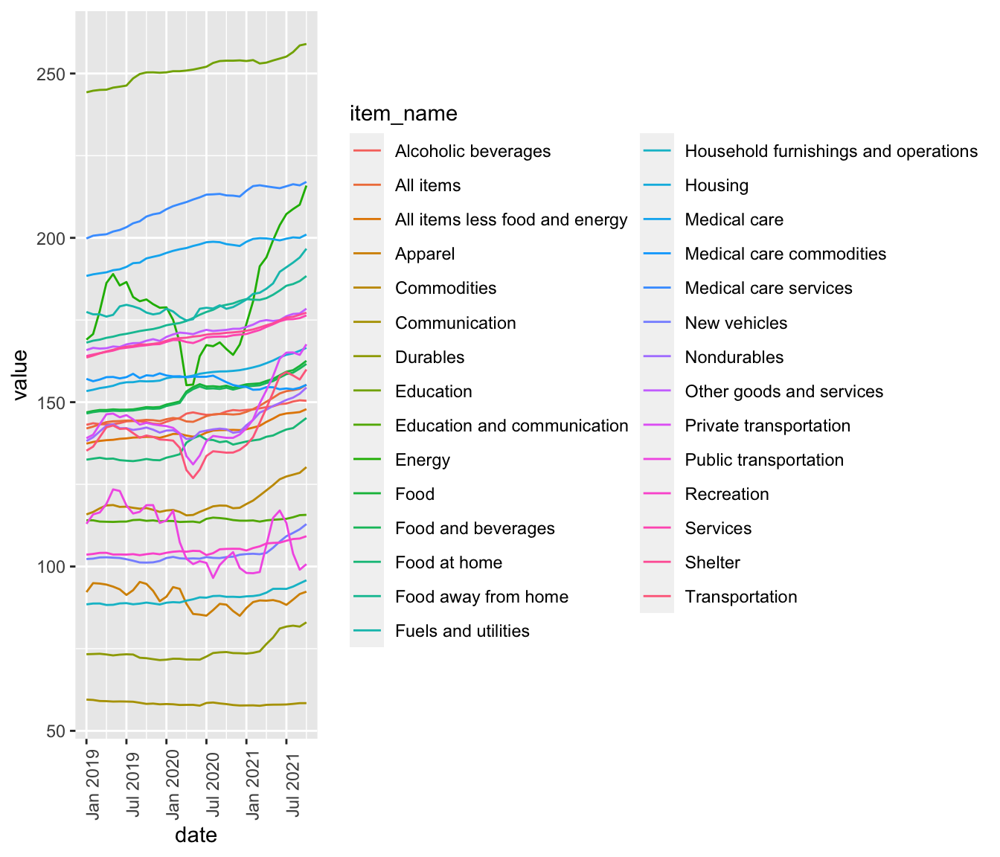
“SUUR0000SA0E”(energy), “SUUR0000SAT1”(private transportation),“SUUR0000SAT”(transportation) decreases during the begining of covid-19 and then rises until now “SUUR0000SAC”(Commodities), “SUUR0000SETA01”(new vehicles) rises steadily “SUUR0000SETG”(publictransportation) decreases ans then rise sharply during the start of 2021, then decrease sharply. “SUUR0000SAE2”(communication) no change
## [1] All items Energy
## [3] All items less food and energy Apparel
## [5] Commodities Durables
## [7] Education and communication Education
## [9] Communication Food and beverages
## [11] Food Food at home
## [13] Alcoholic beverages Other goods and services
## [15] Housing Shelter
## [17] Fuels and utilities Household furnishings and operations
## [19] Medical care Medical care commodities
## [21] Medical care services Nondurables
## [23] Recreation Services
## [25] Transportation Private transportation
## [27] Food away from home New vehicles
## [29] Public transportation
## 29 Levels: Alcoholic beverages All items All items less food and energy ... Transportation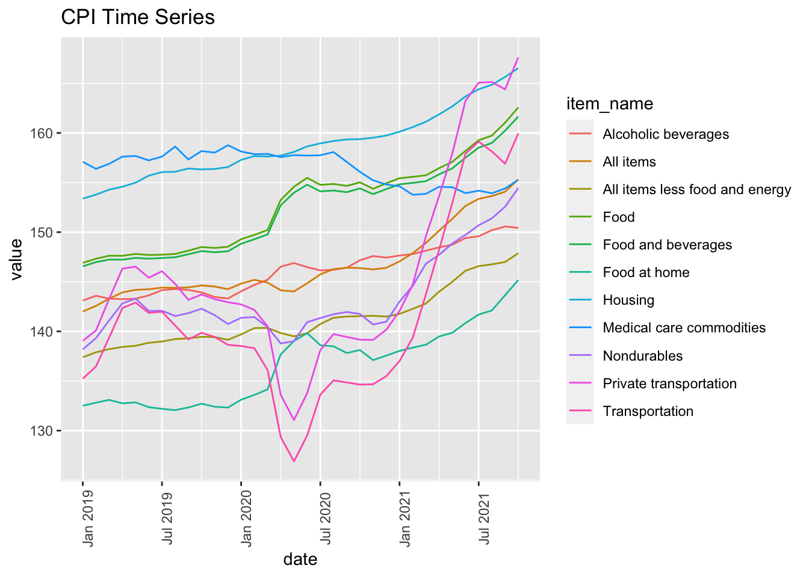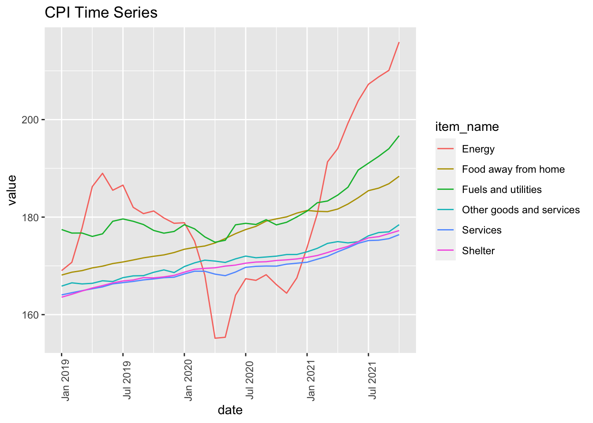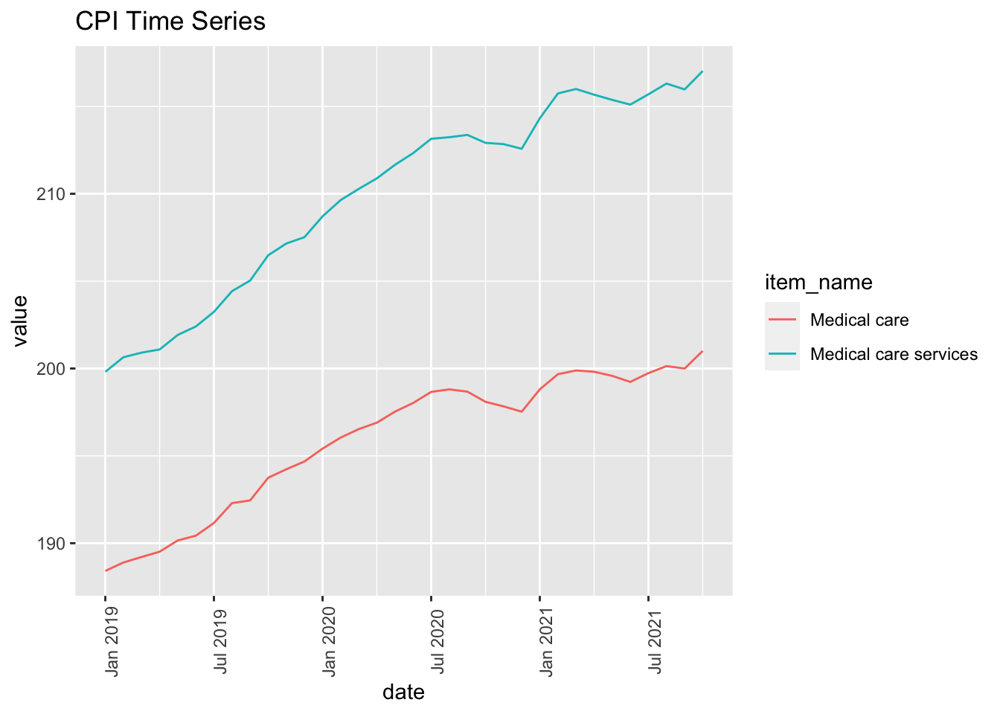
———import library packages and datasets
## # A tibble: 6 × 15
## submission_date state tot_cases conf_cases prob_cases new_case pnew_case tot_death
## <chr> <chr> <dbl> <dbl> <dbl> <dbl> <dbl> <dbl>
## 1 04/01/2021 CA 3570660 3570660 0 2234 0 58090
## 2 05/31/2021 CA 3685032 3685032 0 644 0 62011
## 3 02/06/2020 NE 0 NA NA 0 NA 0
## 4 07/30/2020 ME 3910 3497 413 22 2 123
## 5 02/02/2021 MS 280182 176228 103954 1059 559 6730
## 6 05/03/2020 NH 2518 NA NA 89 0 86
## # … with 7 more variables: conf_death <dbl>, prob_death <dbl>, new_death <dbl>,
## # pnew_death <dbl>, created_at <chr>, consent_cases <chr>, consent_deaths <chr>## # A tibble: 6 × 17
## submission_date state tot_cases conf_cases prob_cases new_case pnew_case tot_death
## <chr> <chr> <dbl> <dbl> <dbl> <dbl> <dbl> <dbl>
## 1 04/01/2021 CA 3570660 3570660 0 2234 0 58090
## 2 05/31/2021 CA 3685032 3685032 0 644 0 62011
## 3 02/06/2020 NE 0 NA NA 0 NA 0
## 4 07/30/2020 ME 3910 3497 413 22 2 123
## 5 02/02/2021 MS 280182 176228 103954 1059 559 6730
## 6 05/03/2020 NH 2518 NA NA 89 0 86
## # … with 9 more variables: conf_death <dbl>, prob_death <dbl>, new_death <dbl>,
## # pnew_death <dbl>, created_at <chr>, consent_cases <chr>, consent_deaths <chr>,
## # date <date>, month <yearmon>## # A tibble: 1,380 × 4
## new_case new_death date state
## <dbl> <dbl> <yearmon> <chr>
## 1 227 3 Apr 2020 AK
## 2 4871 1 Apr 2021 AK
## 3 2297 19 Aug 2020 AK
## 4 12078 49 Aug 2021 AK
## 5 13978 76 Dec 2020 AK
## 6 0 0 Feb 2020 AK
## 7 3569 15 Feb 2021 AK
## 8 0 0 Jan 2020 AK
## 9 6991 27 Jan 2021 AK
## 10 2049 16 Jul 2020 AK
## # … with 1,370 more rows———Function interfaces
———Data Access and Spline plots
##
## AK AL AR AS AZ CA CO CT DC DE FL FSM GA GU HI IA ID IL IN KS KY LA MA
## 665 665 665 665 665 665 665 665 665 665 665 665 665 665 665 665 665 665 665 665 665 665 665
## MD ME MI MN MO MP MS MT NC ND NE NH NJ NM NV NY NYC OH OK OR PA PR PW
## 665 665 665 665 665 665 665 665 665 665 665 665 665 665 665 665 665 665 665 665 665 665 665
## RI RMI SC SD TN TX UT VA VI VT WA WI WV WY
## 665 665 665 665 665 665 665 665 665 665 665 665 665 665## $Northeast
## [1] "CT" "MA" "ME" "NH" "RI" "VT"
##
## $Mid.Atlantic
## [1] "DE" "MD" "NJ" "NY" "PA" "VA" "WV" "DC"
##
## $Southeast
## [1] "AL" "AR" "FL" "GA" "LA" "MS" "NC" "SC" "TN"
##
## $Midwest
## [1] "IN" "IL" "IA" "KS" "KY" "MI" "MN" "MO" "NE" "ND" "OH" "SD" "WI"
##
## $Southwest
## [1] "AZ" "NM" "OK" "TX"
##
## $West
## [1] "AK" "CA" "CO" "HI" "ID" "MT" "NV" "OR" "UT" "WA" "WY"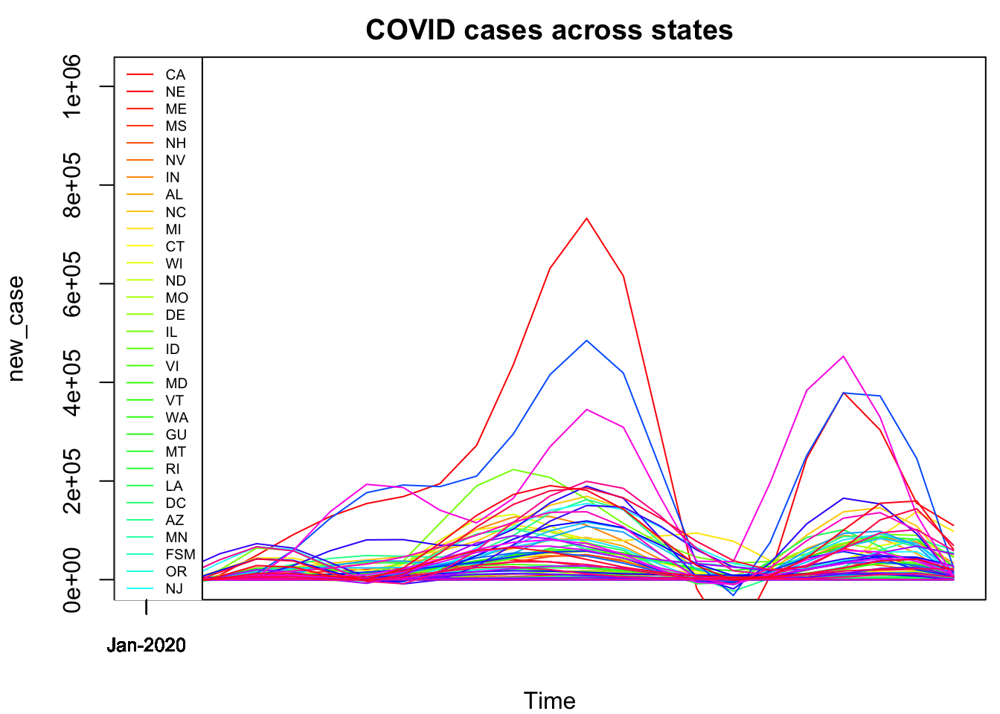
## [1] "#7FC97F" "#BEAED4" "#FDC086" "#FFFF99" "#386CB0" "#F0027F" "#BF5B17"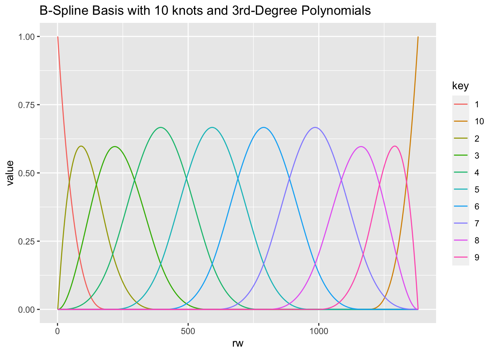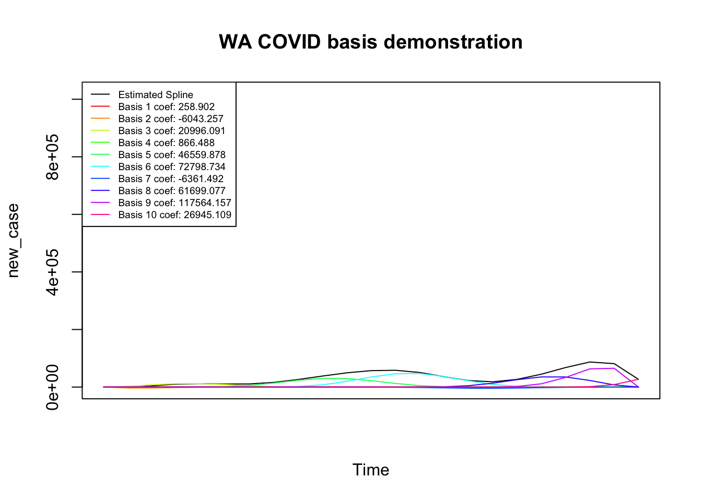
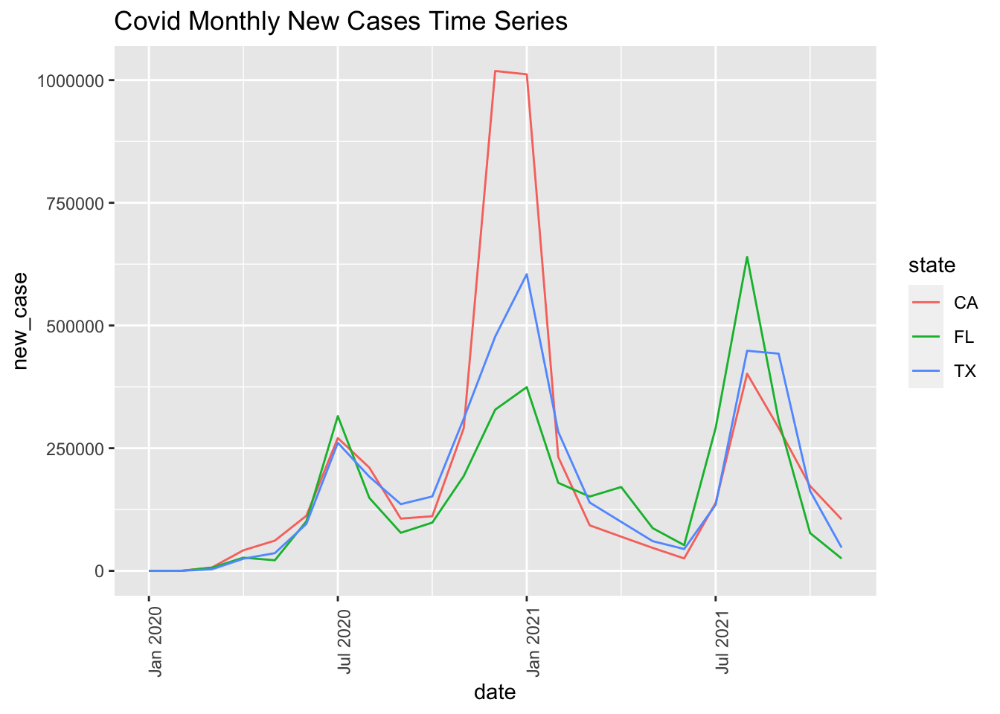
## [,1] [,2] [,3] [,4] [,5] [,6] [,7] [,8]
## [1,] -1135.4069 17224.526 -54298.53 267486.7193 94693.17 778312.57 -399426.591 618176.40
## [2,] 258.9018 -6043.257 20996.09 866.4881 46559.88 72798.73 -6361.492 61699.08
## [3,] 3578.3729 -37512.359 57706.17 186104.3638 153649.15 1186080.87 -705431.741 825278.84
## [,9] [,10]
## [1,] 295703.00 24640.82
## [2,] 117564.16 26945.11
## [3,] 40982.42 110148.01———cluster states and us map demonstration
## [,1] [,2] [,3] [,4] [,5] [,6]
## [1,] 142.07601 144.62822 144.71874 144.50793 152.42152 155.37120
## [2,] 167.14166 196.67706 175.98842 145.48493 214.54366 213.27558
## [3,] 137.52751 138.67175 139.97111 140.14810 145.63209 148.02665
## [4,] 93.37868 94.75949 93.18489 82.58871 91.44434 91.26630
## [5,] 115.98143 119.80251 116.31740 115.76123 126.01145 130.35019
## [6,] 73.38117 73.49278 71.55884 71.69905 78.99411 83.80459
## [7,] 113.90705 113.88412 113.45619 114.75540 113.40067 115.98916
## [8,] 243.92974 246.00452 250.42347 254.49886 252.78931 259.35293
## [9,] 59.41192 59.22117 57.65620 58.40002 57.40858 58.61112
## [10,] 146.98788 146.74726 147.59182 157.50884 154.25807 162.25492
## [11,] 147.36324 147.07549 147.99171 158.27012 154.76195 163.19117
## [12,] 133.22575 131.49527 132.33742 141.51424 137.03442 145.83095
## [13,] 143.23925 143.49236 143.75766 147.90486 148.68759 150.89553
## [14,] 166.19211 165.83990 170.47355 171.90745 175.25216 178.17403
## [15,] 153.34350 155.22764 157.19659 159.08492 162.85855 166.74603
## [16,] 163.65062 165.92340 168.94880 170.78503 174.35293 177.49717
## [17,] 176.28838 178.99996 176.89877 176.44190 188.27261 196.73703
## [18,] 88.59695 88.53504 88.41490 91.46655 91.76723 95.91105
## [19,] 188.65775 188.69563 196.50024 199.03601 199.38766 200.70342
## [20,] 156.82879 157.04207 159.42753 156.22590 152.37622 155.28637
## [21,] 200.21013 200.16426 209.72284 214.14701 215.78766 216.63019
## [22,] 138.35993 144.56072 140.38277 138.93003 150.44591 154.05204
## [23,] 103.95807 103.41746 104.26130 104.38207 107.38713 109.19320
## [24,] 164.08234 165.57464 168.79656 168.81673 174.65515 176.40309
## [25,] 135.11546 145.35725 139.69277 121.32762 161.50949 159.43761
## [26,] 138.85382 149.22830 143.59101 126.10266 166.74997 167.27436
## [27,] 167.95771 170.72777 170.86552 181.64622 182.22189 188.62735
## [28,] 102.68849 102.13632 101.80616 102.64943 105.20592 113.53497
## [29,] 113.42524 122.95309 120.92342 81.95918 122.07539 98.64796## [1] 49## [1] "CA" "NE" "ME" "MS" "NH" "NV" "IN" "AL" "NC" "MI" "CT" "WI" "ND" "MO"
## [15] "DE" "IL" "ID" "VI" "MD" "VT" "WA" "GU" "MT" "RI" "LA" "DC" "AZ" "MN"
## [29] "FSM" "OR" "NJ" "KY" "VA" "SC" "WY" "KS" "TX" "AR" "PW" "MP" "MA" "PR"
## [43] "GA" "NYC" "AS" "AK" "HI" "CO" "WV" "UT" "OK" "FL" "TN" "RMI" "NY" "SD"
## [57] "NM" "PA" "IA" "OH"## # A tibble: 49 × 4
## state long.mid lat.mid group
## <chr> <dbl> <dbl> <dbl>
## 1 AL -86.7 32.6 1
## 2 AR -92.1 34.8 3
## 3 AZ -112. 34.2 2
## 4 CA -119. 37.3 4
## 5 CO -106. 39.0 5
## 6 CT -72.8 41.5 6
## 7 DE -75.4 39.2 7
## 8 FL -83.8 28.1 9
## 9 GA -83.2 32.7 10
## 10 IA -93.4 41.9 14
## # … with 39 more rows


 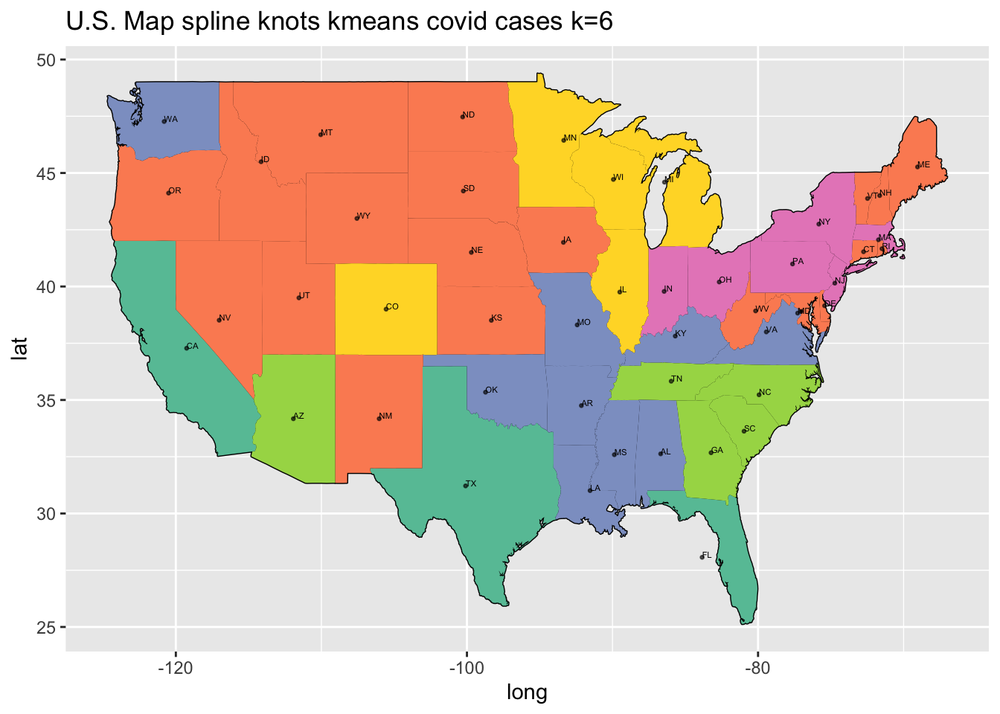
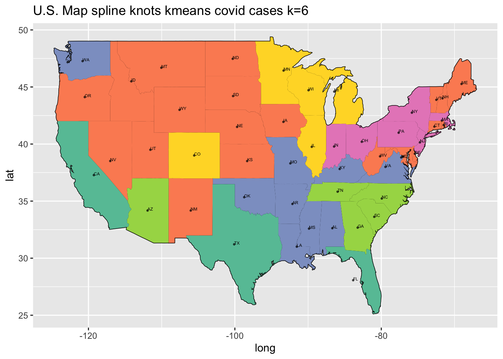 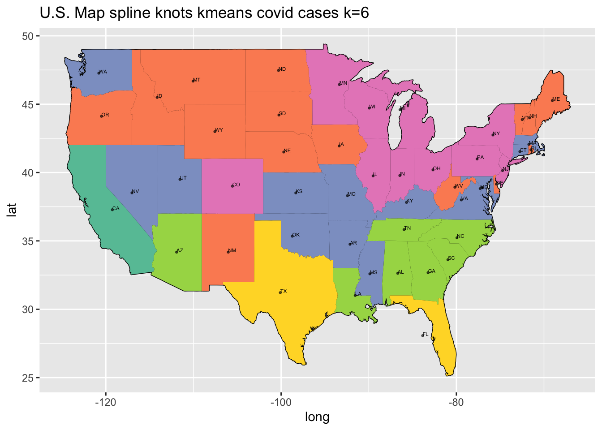
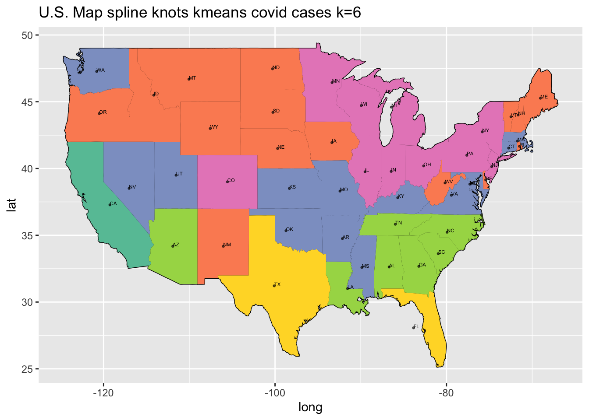

 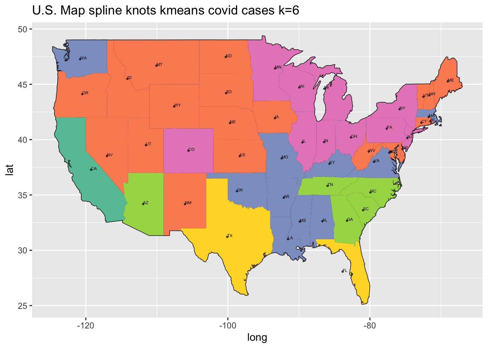
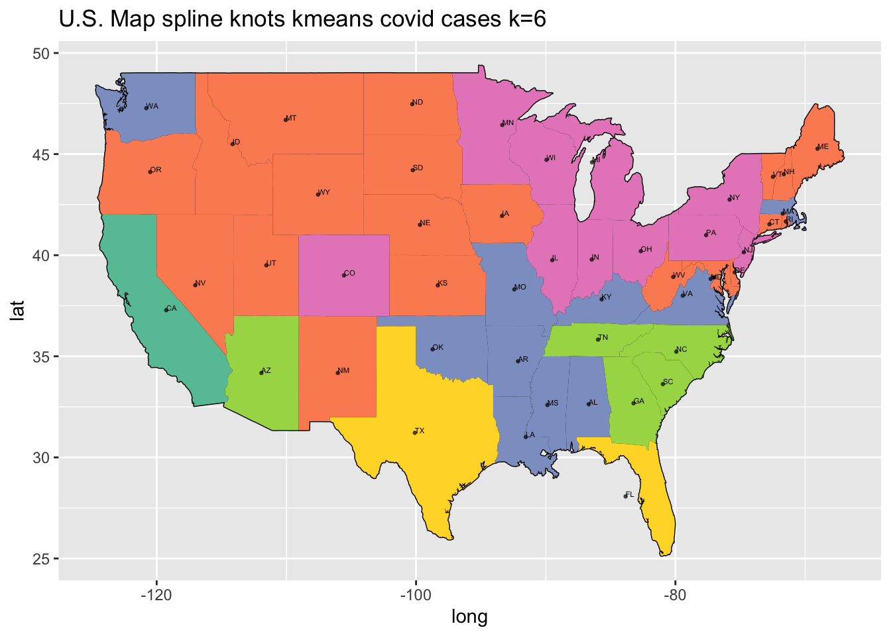


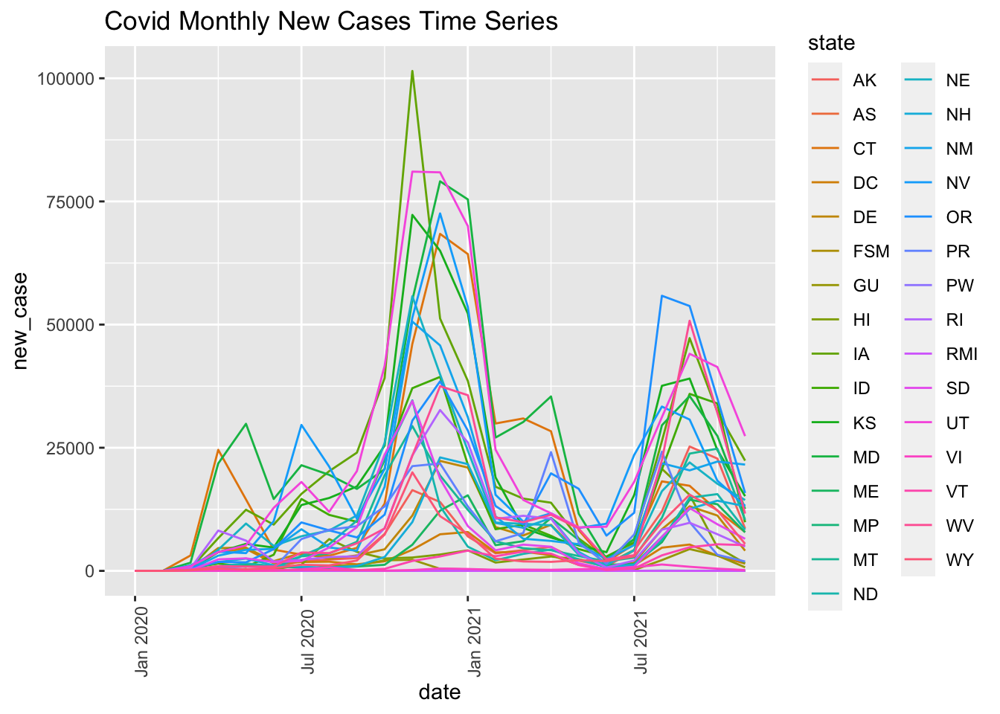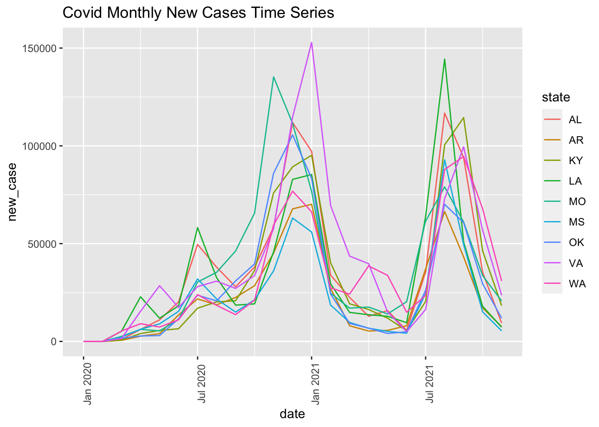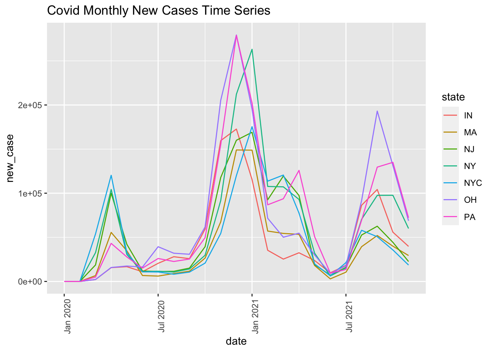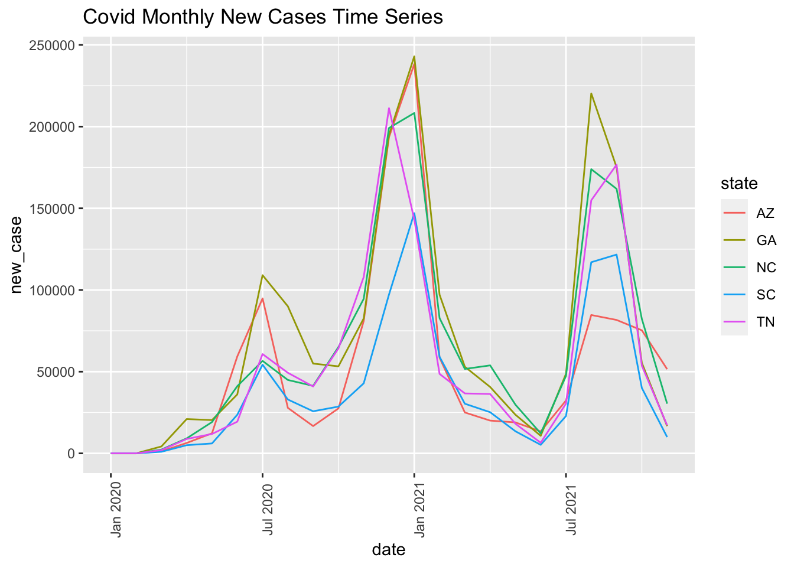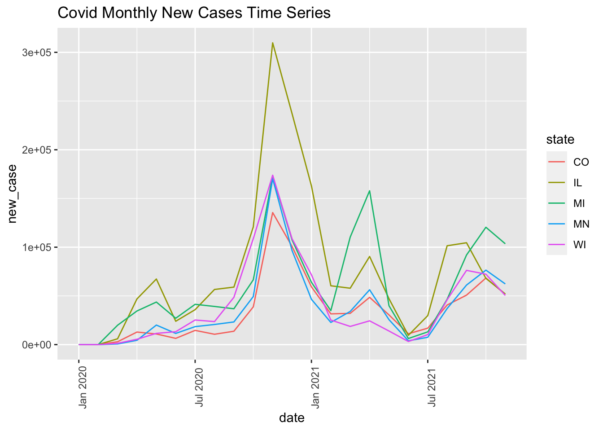
## [1] "\nset.seed(0)\ncluster.num = 5\nclusters = kmeans(as.data.frame(Bcoef.mat), cluster.num, nstart = 10)$cluster\nstates.df = data.frame(STATE = all.states, CLUSTER = clusters)\n\nstate.cluster = list()\nfor (i in 1:cluster.num) {\n state.cluster[[i]] = subset(states.df, CLUSTER==i)$STATE\n}\nfor (i in 1:cluster.num) {\n plot.bspline(covid.com, state.cluster[[i]], 'NEWCD_NORM_500', n.knots=15, degree=3)\n}\n"